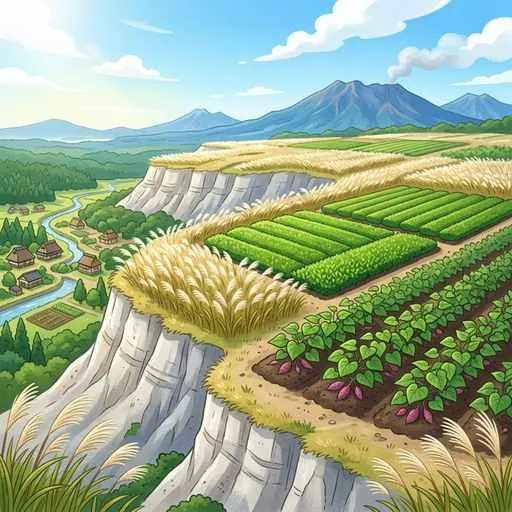
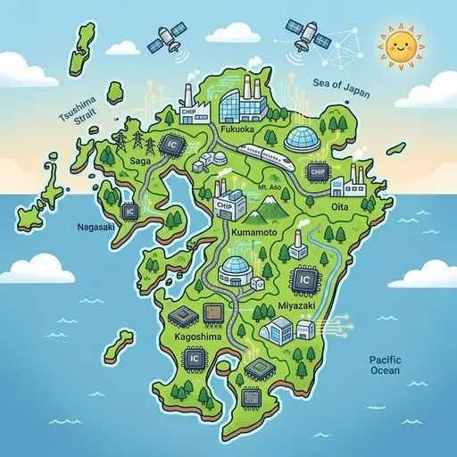

3. 九州地方
九州地方は、活発な火山活動によって作られたダイナミックな自然環境と、それに対応した特色豊かな農業や水産業が見られる地域です。かつて重化学工業で日本を支えた官営八幡製鉄所から、現代のハイテク半導体産業（シリコンアイランド）への変化、環境都市への先進的な取り組み、そして南西諸島・沖縄の特色まで、重要ポイントを解説します！
1. 九州の自然環境と地形の工夫
九州は、火山災害への備えと、火山がもたらした特殊な地質を利用した生活が特徴です。

図1：水はけが良すぎて稲作に適さないため、畑作や畜産が発達した「シラス台地」
① 活発な火山活動
- 阿蘇山（あそさん）：熊本県にあり、世界最大級の「カルデラ」（火山の噴火や陥没でできた大きな円形のくぼ地）を持ちます。
- 桜島（さくらじま）：鹿児島県の錦江湾（鹿児島湾）に浮かぶ、現在も日常的に噴火活動を続ける活発な火山です。
- 雲仙岳（うんぜんだけ）：長崎県にある火山。1990年から始まった大規模な大噴火では、溶岩ドームの崩落による「火砕流（かさいりゅう）」が大きな被害をもたらしました。
- シラス台地：南九州（鹿児島・宮崎）に広がる、過去の火山の噴出物や火山灰が厚く堆積してできた台地です。非常に水はけが良すぎるため、水が溜まらず稲作（水田）には適しません。
② 平野と河川の工夫
- 筑紫山地と筑後川：北部を東西に走る筑紫山地と、九州最大で「筑紫次郎」の異名を持つ筑後川が流れます。その下流には九州一の稲作地帯である筑紫平野（つくしへいや）が広がります。
- クリークと棚田：筑紫平野では、かつて水を確保・管理するために張り巡らされた用排水路「クリーク」が見られました。また、山がちな斜面には階段状に作られた水田「棚田（たなだ）」が作られました。
- 有明海（ありあけかい）：潮の満ち引きの差が極めて大きい特徴的な海で、干潮時には広大な干潟が現れます。
2. 九州・沖縄の特色ある一次産業
地質や気候のハンデを活かし、他地域には真似できない独自の強みを発揮しています。
- シラス台地の農業（超頻出！）：水はけが良い土壌に適したさつまいもの栽培が盛んで、デンプンや焼酎の原料となります。また、静岡県に次ぐ生産量を誇る茶（知覧茶など）や、広大な土地を利用した豚・肉用牛・鶏などの畜産（ちくさん）が鹿児島・宮崎で日本屈指の規模を誇ります。
- 宮崎平野の促成栽培：温暖な気候と日照時間の長さを利用し、冬場にピーマンやきゅうりなどをビニールハウスで成長させて早めに出荷する促成栽培（そくせいさいばい）が盛んです。
- その他の作物・水産：熊本県の八代平野では、畳表の原料となる「い草」の生産が日本一です。有明海では、干潟を利用した「のり」の養殖が最も盛んです。
- 沖縄の農業と暮らし：年間を通して温暖多湿な亜熱帯気候を活かし、パイナップルやサトウキビの栽培が盛んです。一方で、広大なアメリカ軍基地が集中しているという社会的な問題を抱えています。
3. 工業の変遷と環境への取り組み
明治の重化学工業の勃興から、現代の環境保全とハイテク産業まで、九州の工業は変遷してきました。

図2：きれいな水と豊富な航空便・道路網を活かして半導体工場が集積する「シリコンアイランド」
- 八幡製鉄所（やはたせいてつじょ）：1901年に北九州市で操業を開始した日本初の官営製鉄所。中国から輸入した鉄鉱石と筑豊炭田の石炭を結びつけ、北九州工業地帯の発展を導きました。
- エネルギー革命：1960年代に、日本の主要燃料が石炭から安価な輸入石油へと移行する「エネルギー革命」が起き、炭鉱の閉山が相次いで北九州の工業は一時低迷しました。
- シリコンアイランド：現在、九州はきれいな水と豊富な空港網を活かして、多くのIC（集積回路）や半導体工場が進出しており、「シリコンアイランド」の愛称で呼ばれます。近年では自動車組立工場の進出も目立ちます。
- 公害の教訓とエコタウン：かつて高度成長期に水俣湾沿岸でチッソの工場排水による有機水銀が原因の「水俣病（みなまたびょう）」が発生し、甚大な健康・環境被害をもたらしました。この深い反省から、北九州市などは廃棄物を再利用してゴミを完全にゼロにすることを目指す「ゼロエミッション」の理念に基づいた「エコタウン事業」を推進し、環境対策の先進都市として生まれ変わりました。
4. 観光・世界遺産・都市
- 世界遺産と環境：1993年に日本初の世界自然遺産に登録された鹿児島県の屋久島では、樹齢千年を超える縄文杉などの自然景観を守りつつ体験する「エコツーリズム」が盛んです。また、宇宙センターがある種子島は鉄砲伝来の地としても有名です。
- 地方中枢都市（福岡市）：九州地方で最も人口が多く、空港や港が都心に近いため「アジアの玄関口」としてビジネスや観光で急速に成長する政令指定都市です。
🔥 定期テスト対策・暗記のコツ
① シラス台地とさつまいも・畜産（超頻出！）
「なぜ南九州でさつまいもの栽培や畜産が盛んなのか？」という問題に対し、「火山噴出物でできたシラス台地は水はけが良すぎて水不足になりやすく、米作りに適さないため、乾燥に強いさつまいもや飼料用の作物を育てる畑作・畜産が発達したから」と答えられるようにしましょう！
② 八幡製鉄所の立地条件
八幡製鉄所が北九州に作られた理由は、「筑豊炭田の石炭を利用でき、中国（清）に近いため鉄鉱石を安く輸入しやすかったから」です。この石炭と鉄鉱石の獲得元を対比させて覚えましょう。
③ シリコンアイランドの理由
「なぜ九州に半導体工場が多いのか？」➔「半導体の洗浄に不可欠なきれいな水が豊富で、製品を早く運ぶための高速道路網や空港が整備されていたため」です。水と交通の2つの理由がポイントです！